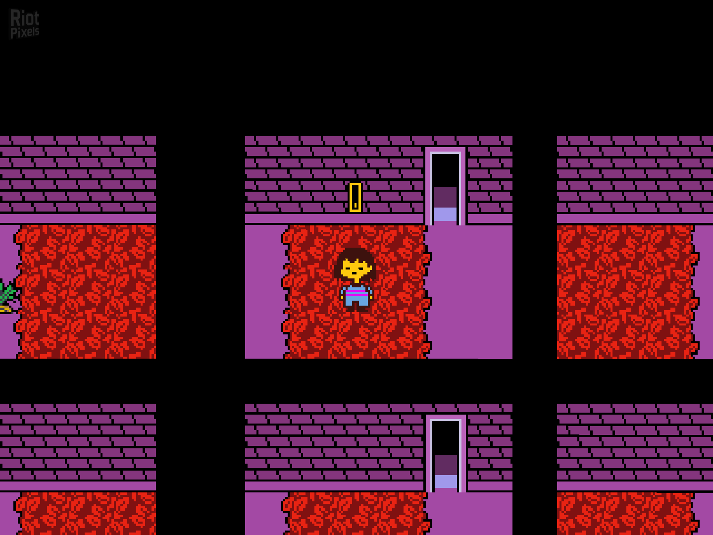
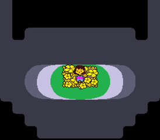
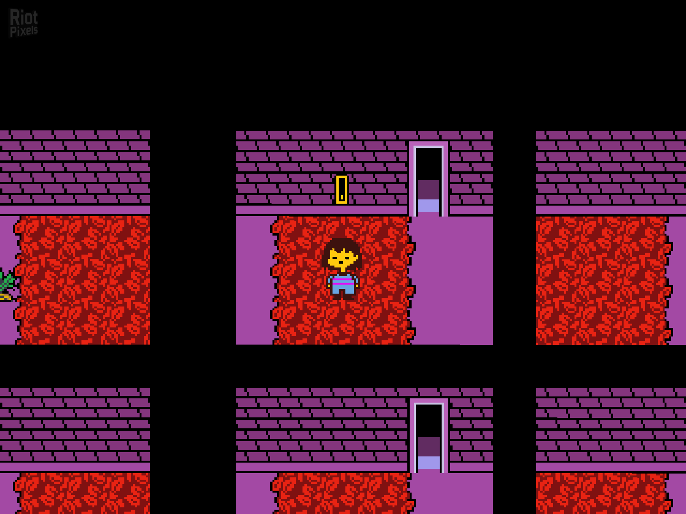
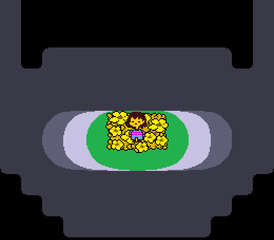

* ey, humano. la siguiente página puede contener spoilers bastantes gordos de Undertale. si no has completado el juego, leer esta página hará que pases un mal rato.
* y no queremos eso... ¿o sí?
* como sea humano es tu decisión.....siempre es tu decisión jeje
introducción
Undertale es un videojuego desarrollado por Toby Fox. La historia sigue a un niño que cae al subsuelo, un gran mundo subterráneo separado de la superficie por una barrera mágica.
Historia
En un tiempo lejano, dos razas gobernaban la Tierra: humanos y monstruos. Sin embargo, una guerra estalló entre ellos. Después de una brutal batalla, los humanos salieron victoriosos y sellaron a los monstruos bajo tierra con una barrera mágica. Muchos años después, un niño llamado Frisk cae en el mundo subterráneo.
Despertando en el subterráneo, Frisk se encuentra con Flowey, una flor parlante que inicialmente parece amigable, pero pronto revela sus intenciones malignas. Flowey intenta robar la “determinación” de Frisk, la esencia que le permite al jugador guardar y cargar su progreso. Sin embargo, Toriel, una amable monstruo con apariencia de cabra, interviene y rescata a Frisk, llevándolos a su hogar.
Toriel cuida de Frisk y le enseña sobre el mundo subterráneo. Ella intenta disuadir a Frisk de dejar su hogar, preocupada por los peligros que enfrenta el niño en su camino hacia la superficie. A pesar de sus advertencias, Frisk decide seguir adelante y se enfrenta a Toriel en combate. Dependiendo de las acciones del jugador, Frisk puede luchar contra Toriel o persuadirla pacíficamente para que lo deje ir.
A medida que Frisk avanza, se encuentra con varios personajes memorables, como Sans y Papyrus, dos esqueletos hermanos. Papyrus, ansioso por capturar a un humano y unirse a la Guardia Real, trata de atrapar a Frisk en varias trampas cómicas, mientras que Sans actúa de manera más relajada y enigmática. Frisk también conoce a Undyne, la líder de la Guardia Real, que inicialmente persigue a Frisk con determinación feroz.
En el camino, Frisk llega a Hotland, un área volcánica, y se encuentra con Alphys, la científica real. Alphys, aunque nerviosa y tímida, resulta ser una aliada valiosa. Ella ha estado espiando a Frisk a través de cámaras y le proporciona ayuda crucial en su viaje. Alphys también revela que ha estado experimentando con “determinación” y ha creado seres llamados Amalgamas, formados a partir de los cuerpos y almas de monstruos fallecidos.
Frisk finalmente llega al castillo del rey Asgore Dreemurr, el gobernante del subterráneo. Asgore necesita el alma de Frisk para romper la barrera y liberar a los monstruos. En el enfrentamiento con Asgore, el jugador debe decidir entre luchar o encontrar una solución pacífica. Aquí, Flowey reaparece, revelándose como Asriel Dreemurr, el hijo fallecido de Asgore y Toriel, que ha absorbido numerosas almas para obtener un inmenso poder.
Dependiendo de las decisiones del jugador a lo largo del juego, hay varios finales posibles.
Personajes
Frisk

Es el protagonista del juego, un niño humano que cae al mundo subterráneo y cuya determinación guía las decisiones del jugador a lo largo de la historia.
Flowey
Inicialmente aparece como una flor amigable pero pronto revela su naturaleza malévola. Flowey busca la "determinación" de Frisk para sus propios fines y actúa como un antagonista temprano en el juego.
Toriel

Una cabra antropomórfica que actúa como cuidadora de Frisk al inicio del juego. Es amable y protectora, y enseña a Frisk sobre el mundo subterráneo. Dependiendo de las acciones del jugador, puede ser una aliada o un obstáculo.
Sans y Papyrus


Dos esqueletos hermanos con personalidades contrastantes. Sans es relajado, perezoso y misterioso, mientras que Papyrus es entusiasta, ingenuo y está obsesionado con unirse a la Guardia Real para capturar a un humano.
Undyne

La jefa de la Guardia Real y una de las guerreras más poderosas del subterráneo. Es ferozmente leal a su rey y al principio persigue a Frisk con la determinación de proteger a los monstruos del mundo exterior.
Alphys

Una científica real tímida y nerviosa que juega un papel crucial en la trama. Alphys está obsesionada con los humanos y ha estado experimentando con la "determinación". A pesar de sus errores, quiere hacer lo correcto y ayuda a Frisk en su viaje.
Asgore Dreemurr

El rey del subterráneo y padre de Asriel. Aunque es amable y gentil por naturaleza, está decidido a romper la barrera que separa a los monstruos de los humanos, lo que lleva al clímax del juego.
Asriel Dreemurr

El hijo fallecido de Asgore y Toriel, y la verdadera identidad de Flowey. Asriel es central en la historia y su destino está ligado a las decisiones que toma Frisk durante el juego.
Jugabilidad
La jugabilidad de Undertale es única y está diseñada para ofrecer una experiencia interactiva y emocionante que se adapta a las decisiones del jugador. Aquí te explico algunos aspectos clave:
Sistema de combate
Undertale presenta un sistema de combate innovador donde puedes elegir entre atacar, usar objetos, defender o mostrar misericordia hacia los enemigos. La opción de mostrar misericordia abre caminos hacia rutas pacifistas, mientras que atacar puede llevar a rutas más violentas.
Interacciones y diálogos
La interacción con los personajes es fundamental. Cada acción y decisión que tomes afectará la forma en que los personajes reaccionan y cómo se desarrolla la historia. Puedes optar por ser amistoso, compasivo o incluso desafiante.
Puzzles y exploración
A lo largo del juego, encontrarás diversos puzzles que requieren lógica y creatividad para resolver. La exploración también es clave, ya que descubrirás secretos, objetos y personajes ocultos que pueden influir en tu experiencia.
Consecuencias de tus decisiones
Undertale se destaca por su narrativa ramificada y múltiples finales, dependiendo de cómo interactúes con los personajes y resuelvas los conflictos. Cada elección tiene repercusiones en el desarrollo de la trama y en el destino de los personajes.
Estilo visual y sonoro
El juego presenta gráficos pixelados con un estilo retro que evoca nostalgia, complementado por una banda sonora que varía desde melodías alegres hasta piezas emotivas que enriquecen la atmósfera del juego.
Galería
 



 *(ver todos estos spoilers y saber que tienes que leer aun la sección de rutas y escuchar los soundtrack..... te llena de determinación)
*(ver todos estos spoilers y saber que tienes que leer aun la sección de rutas y escuchar los soundtrack..... te llena de determinación)